| Contest Dashboard |
Cartoon |
Top Rated caption |
The New Yorker's winner |
Finalists Announced (date of issue) |
| 799 Dashboard |
 |
“..... and that's when she said, 'It's me or the cat.” |
“I thought you’d like to try it, instead of just knocking it off the counter.” |
May 9, 2022
|
| 798 Dashboard |
 |
“Sure, call Roadside Assistance. The more, the merrier.” |
“Don’t worry, you'll be running in no time.” |
April 25 & May 2
|
| 797 Dashboard |
 |
“Is this a Middle Age crisis?” |
“We can all hear you snoring in there, Steve.” |
April 18, 2022
|
| 796 Dashboard |
 |
“Turns out they only check to see if you return the shoes.” |
“Turns out they only check to see if you return the shoes.” |
April 11, 2022
|
| 795 Dashboard |
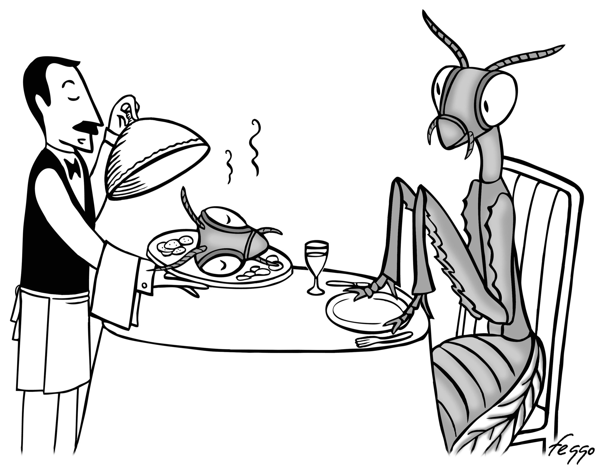 |
“His last words were "I hope this goes straight to her hips."” |
“From the gentleman at the bar.” |
April 4, 2022
|
| 794 Dashboard |
 |
“I told you no lawyer on earth would take our case.” |
“Oh, no! They’re returning him.” |
March 28, 2022
|
| 793 Dashboard |
 |
“Teach a bear to shop and he will never have to fish again.” |
“No bag. Just toss it in the air. ” |
March 21, 2022
|
| 792 Dashboard |
 |
“It seems someone else wrote a song called "HELP"” |
“So far, it looks like no one is coming to the recital.” |
March 14, 2022
|
| 791 Dashboard |
 |
“I’m pretty sure I wasn’t their first choice.” |
“It’s got an indoor tree.” |
March 7, 2022
|
| 790 Dashboard |
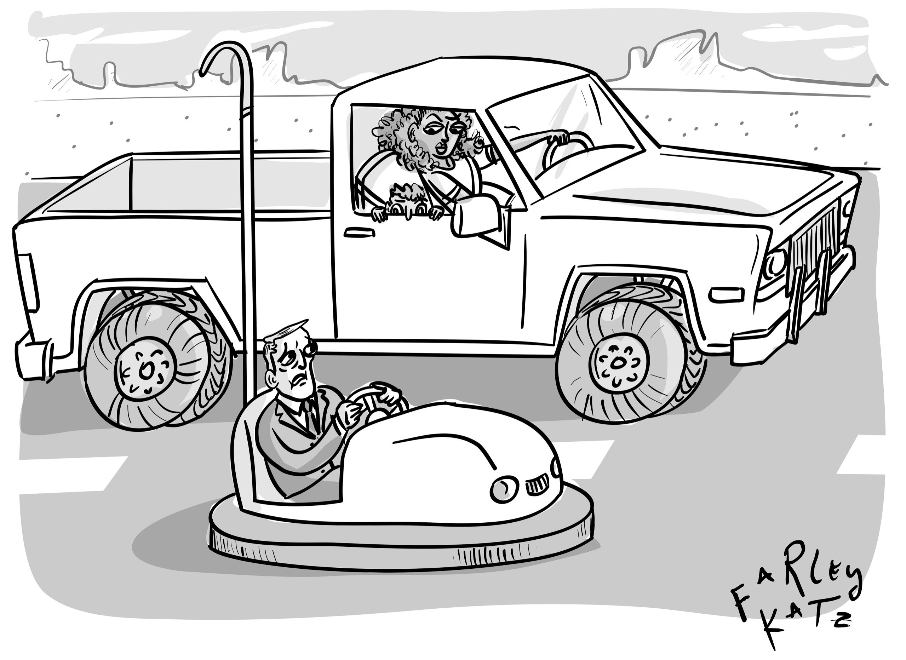 |
“You take a left at these lights. Go the the next junction. Spin around 10 times. Hit the wall. Then reverse back about 10 feet and it should be on your left.” |
“The dealer said it scored high in crash tests.” |
February 28, 2022
|
| 789 Dashboard |
 |
“Do you have to come in here every time I turn on the light?” |
“Do you have to come in here every time I turn on the light?” |
February 14 & 21, 2022
|
| 788 Dashboard |
 |
“You should have done that before you put it on.” |
"Ideal for parties with no atmosphere." |
February 7, 2022
|
| 787 Dashboard |
 |
“Of course I’m living in the past. Have you seen the present?!” |
“These should help me approach your father on his own level.” |
January 31, 2022
|
| 786 Dashboard |
 |
“This is the homework your son alleges my client ate.” |
“My client is prepared to walk.” |
January 24, 2022
|
| 785 Dashboard |
 |
“Come out with your hands up, wrists straight, fingers gently curved!” |
“Looks like somebody needs to be taught a lesson.” |
January 17, 2022
|
| 784 Dashboard |
 |
“George quickly realized he ordered from the wrong Amazon.” |
“Mind if I read over your shoulder? I have trouble turning pages.” |
January 3 & 10, 2022
|
| 783 Dashboard |
 |
“What makes you think he just wants you as something on the side ?” |
“And how did being left on the plate make you feel?” |
December 20, 2021
|
| 782 Dashboard |
 |
“I really don't need two more men in my life who never talk.” |
“Just pretend to give them your wallet.” |
December 13, 2021
|
| 781 Dashboard |
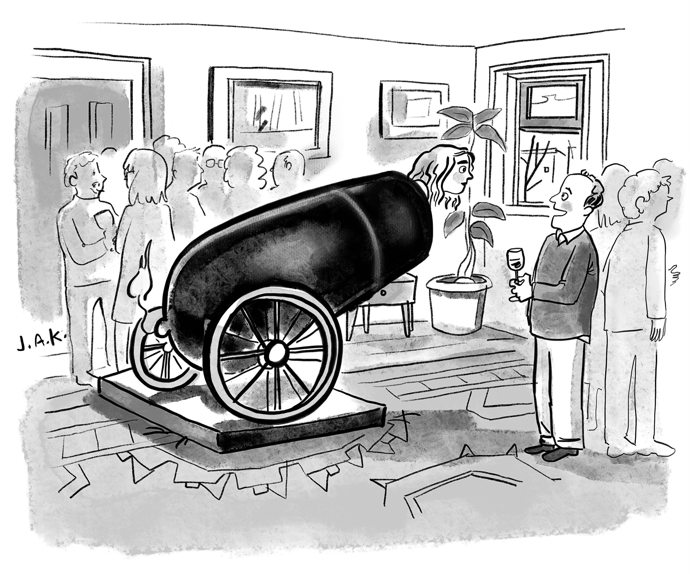 |
“Where do you see yourself in five seconds?” |
“I so rarely meet a person of your calibre.” |
December 6, 2021
|
| 780 Dashboard |
 |
“Sink or swim is nothing. Be glad you weren't here when the corporate culture was dog eat dog.” |
“Apparently, I was mistaken. He’s not in over his head.” |
November 29, 2021
|
| 779 Dashboard |
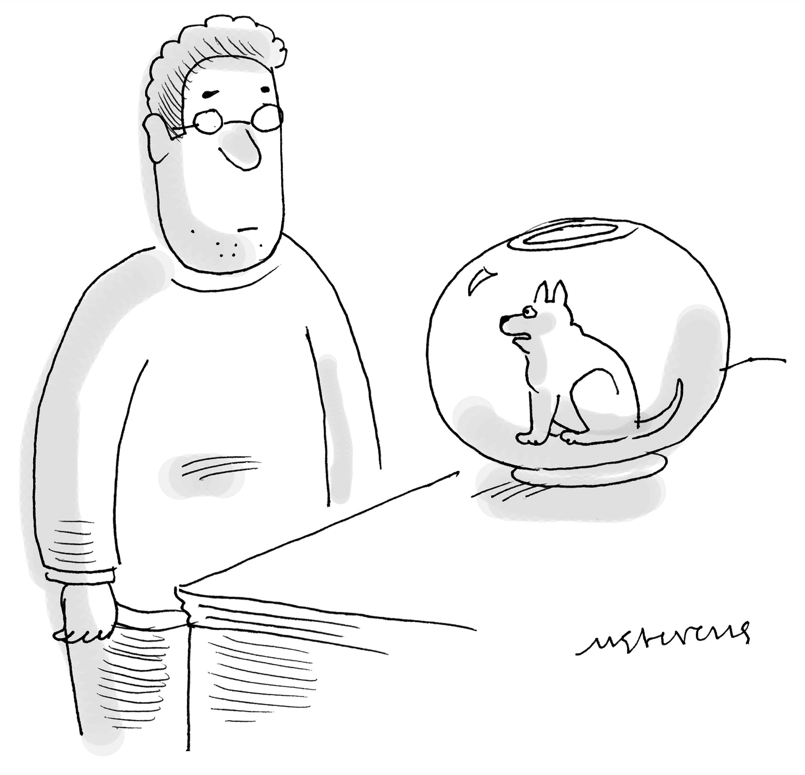 |
“I don't ask you how you squeezed into that sweater.” |
“Technically, the fish is still in the bowl.” |
November 22, 2021
|
| 778 Dashboard |
 |
“It’s the closest Texas would let us get to sex ed.” |
"Don't sell him short. He did solve that crossing-the-road thing." |
November 15, 2021
|
| 777 Dashboard |
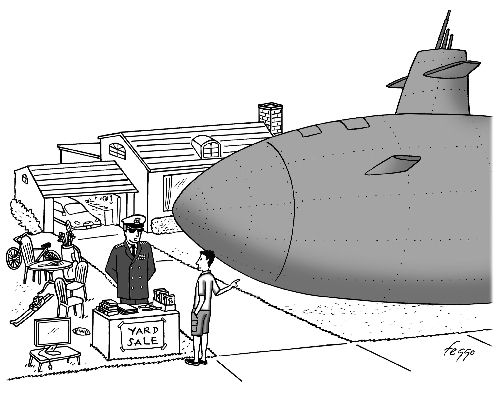 |
“Amazon accidentally sent two.” |
“It works fine—we’re just no longer a nuclear family.” |
November 8, 2021
|
| 776 Dashboard |
 |
“He hasn't proposed yet, but he did give me a written estimate.” |
“Most people only have roadside assistance.” |
November 1, 2021
|
| 775 Dashboard |
 |
“Can’t believe we’re opening for Genesis.” |
“Can’t believe we’re opening for Genesis.” |
October 25, 2021
|
| 774 Dashboard |
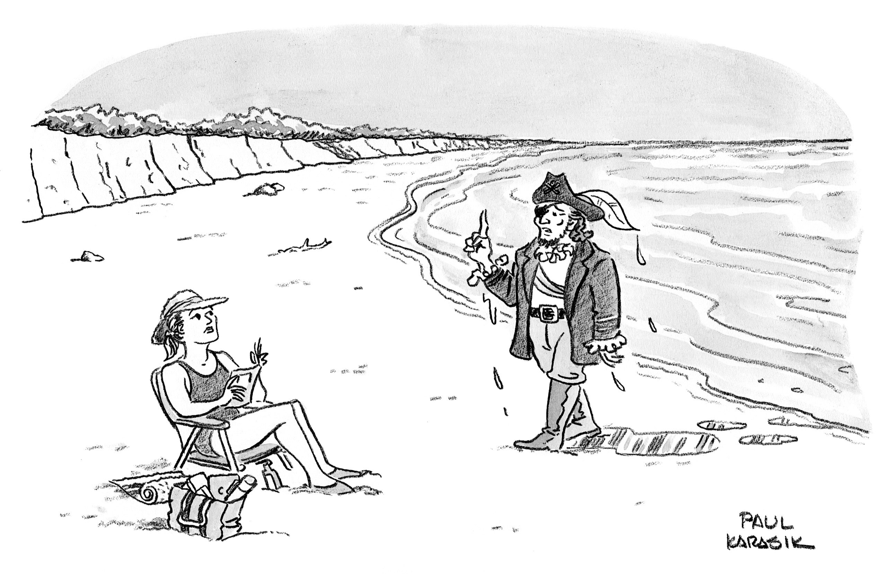 |
“O, hi Carol. I didn't expect it would be an ex that marked the spot.” |
“By any chance, are you sitting on a large X?” |
October 18, 2021
|
| 773 Dashboard |
 |
“„.dnos ǝɥʇ ɹǝpɹo ʇ’uoᗡ„” |
“We should’ve ordered our drinks straight up.” |
October 11, 2021
|
| 772 Dashboard |
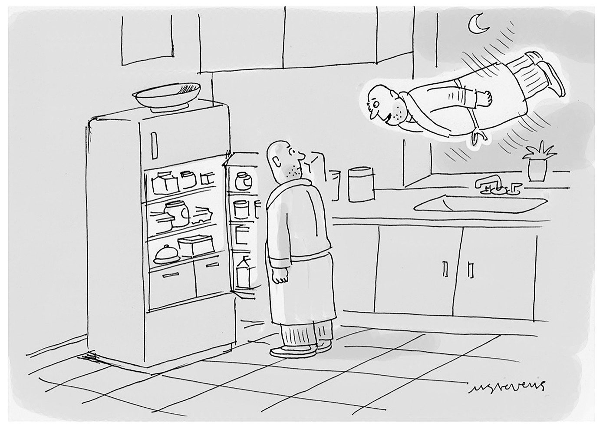 |
“This isn't what I meant when I said to go towards the light.” |
“This isn’t what I meant when I said to go toward the light.” |
October 4, 2021
|
| 771 Dashboard |
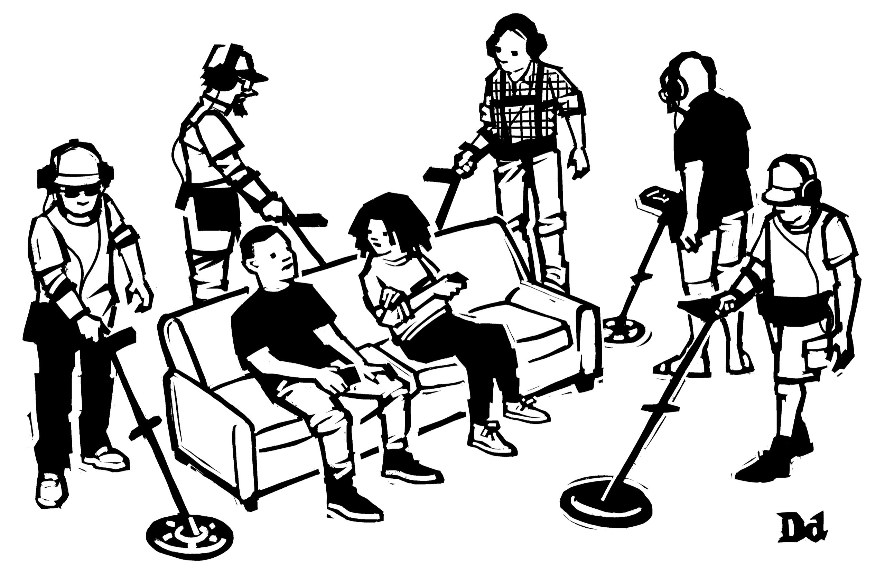 |
“Three more dollars and we can order a pizza.” |
“Don’t worry about it—I wasn't going to say yes anyway.” |
September 27, 2021
|
| 770 Dashboard |
 |
“I guess "trail lawyer" wasn't a typo after all.” |
“I guess I misunderstood when you said your legal problems were behind you.” |
September 20, 2021
|
| 769 Dashboard |
 |
“Trying to make it feel more like Amazon. I mean, the Amazon.” |
"His favorite book is 'A Farewell to Arms,' so don't get too close." |
September 13, 2021
|
| 768 Dashboard |
 |
“Don't tell me you ordered from White Castle again.” |
"Winner gets the knight." |
September 6, 2021
|
| 767 Dashboard |
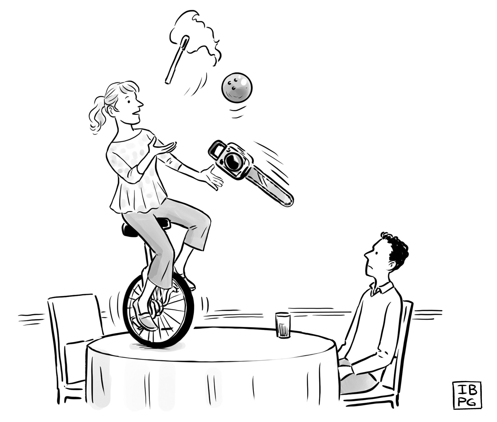 |
“You seem really nice - most of the guys I date are clowns.” |
“Now, if you'll just yank away the tablecloth.” |
August 30, 2021
|
| 766 Dashboard |
 |
“Well played, Fran. The tuba will be gone by morning.” |
“I sent my wife up an hour ago about the noise. Have you seen her?” |
August 23, 2021
|
| 765 Dashboard |
 |
“It was then that Marcus realized that his message in a bottle requesting beer and ice may have contained a single yet crucial typo.” |
“I know how you feel. This used to be Florida.” |
August 16, 2021
|
| 764 Dashboard |
 |
“If you're from Uber Eats, just sprinkle it in.” |
“I hope you’ve come to change the water.” |
August 9, 2021
|
| 763 Dashboard |
 |
“You can use the loaner corn dog while you wait. Can you drive a stick?” |
“So, when did the ‘check mustard’ light come on?” |
August 2, 2021
|
| 762 Dashboard |
 |
“First, let me bring you up to speed.” |
“We’re really looking for someone with more lab experience.” |
July 26, 2021
|
| 761 Dashboard |
 |
“He's the only one who can legally hand out refreshments to voters in Georgia.” |
“He says making lemonade is not an option.” |
July 12 & 19, 2021
|
| 760 Dashboard |
 |
“You probably meant compote.” |
“It’s curb to table.” |
July 5, 2021
|
| 759 Dashboard |
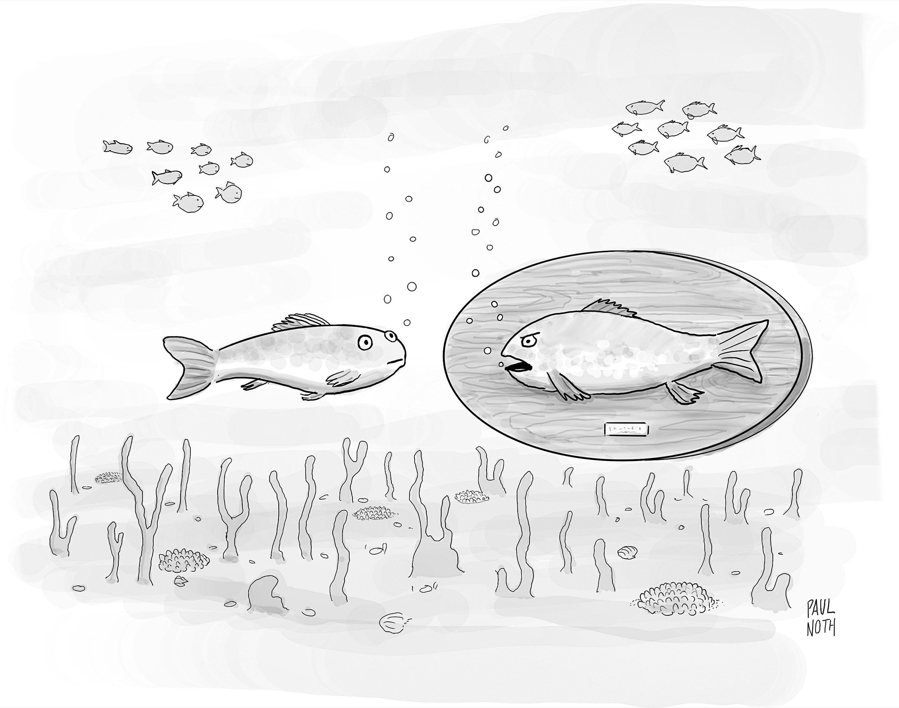 |
“They call it kitsch-and-release.” |
“They call it kitsch and release.” |
June 28, 2021
|
| 758 Dashboard |
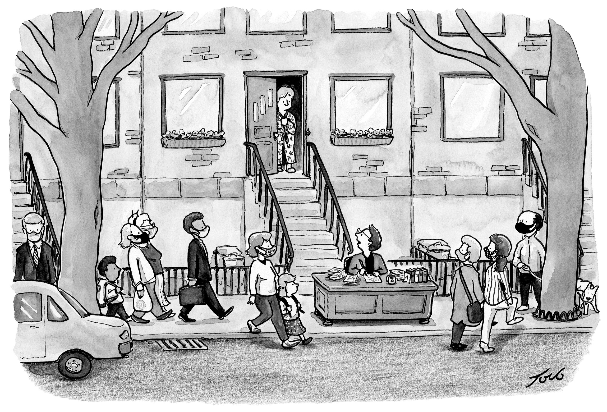 |
“Honey can you close the door? I’m in a meeting.” |
“Honey, can you close the door? I’m in a meeting.” |
June 21, 2021
|
| 757 Dashboard |
 |
“I thought partly cloudy with a chance of rage was a typo” |
“Don’t worry, it’s just a front.” |
June 14, 2021
|
| 756 Dashboard |
 |
“And just when I finally got comfortable in my own skin, she repainted the bedroom.” |
“So, you’re saying you didn’t miss your last two appointments?” |
June 7, 2021
|
| 755 Dashboard |
 |
“'Yes Robert I bought a chair. I was sick of my options being between a rock and a hard place.'” |
“If you’re so civilized, why don’t you use a coaster?” |
May 31, 2021
|
| 754 Dashboard |
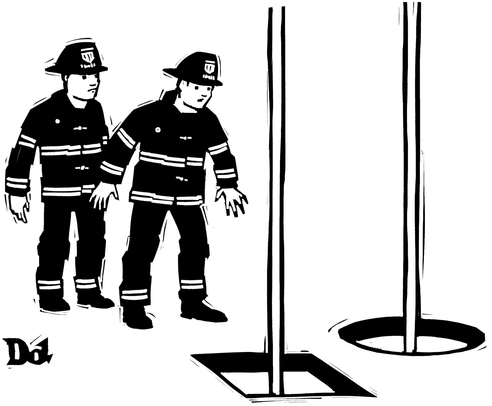 |
“Whoa, the new recruit went down the laundry chute.” |
“Since when did the pizza delivery guy get his own pole?” |
May 24, 2021
|
| 753 Dashboard |
 |
“Oh I'm sorry, maybe I'd move faster if SOMEONE didn't bite my leg off.” |
“Oh, hey, I almost didn’t recognize you outside of work.” |
May 17, 2021
|
| 752 Dashboard |
 |
“Don't give them anything. It only encourages sequels.” |
“The classics can be so intimidating.” |
May 10, 2021
|
| 751 Dashboard |
 |
“If you see a fork in the road, avoid it.” |
“I want one that snows.” |
April 26 & May 3, 2021
|
| 750 Dashboard |
 |
“It’s good to be back in the field. It just wasn’t the same working from home.” |
“Every night, when I try to sleep, I can’t stop thinking about work.” |
April 19, 2021
|
| 749 Dashboard |
 |
“4B wants you to make her husband disappear.” |
|
|
| 748 Dashboard |
 |
“I would prefer to go out the way we came in.” |
“Not the return to inside dining I was expecting.” |
April 5, 2021
|
| 747 Dashboard |
|
“Just be glad he's not wearing his kilt today.” |
“I’m always afraid he will drop in unexpectedly.” |
March 29, 2021
|
| 746 Dashboard |
 |
“I forgot what I came upstairs for.” |
“So that’s where all the furniture went.” |
March 22, 2021
|
| 745 Dashboard |
 |
“We probably should have done something about this last year when it was still three blocks away.” |
“I told you we should have salted the roads.” |
March 15, 2021
|
| 744 Dashboard |
 |
“Your going as a satellite dish? I'm going as a pilgrim.” |
“I could never pull that off.” |
March 8, 2021
|
| 743 Dashboard |
 |
“I’ve changed my mind. I love it.” |
“Still not level.” |
March 1, 2021
|
| 742 Dashboard |
|
“Sir, this is the Met. The Mets are down the street.” |
“That’s a rare medium. Well done.” |
February 15 & 22, 2021
|
| 741 Dashboard |
 |
“Don’t be fooled. He has a dark side.” |
“I think it’s just a phase.” |
February 8, 2021
|
| 740 Dashboard |
 |
“I hope she doesn't say "charge"” |
“You were right—putting him on commission changed his attitude.” |
February 1, 2021
|
| 739 Dashboard |
 |
“Of course we wanted a son. But we also wanted unconditional love.” |
“Once tax season is over, you can go back to being the only child.” |
January 25, 2020
|
| 738 Dashboard |
|
“Just to mess with him put them back on the tree.” |
“Can’t wait to see the look on his face when we put these back on the tree.” |
January 18, 2021
|
| 737 Dashboard |
 |
“I thought you said the cloud was secure.” |
“I thought you said the cloud was secure.” |
January 4 & 11, 2021
|
| 736 Dashboard |
 |
“You can advocate for wind power all you want, Randy, but you’re not going to escape your fossil fuel destiny.” |
“Your meal came with a toy?” |
December 21, 2020
|
| 735 Dashboard |
 |
“It always ends in tiers......” |
“I can keep it together during the ceremony. The reception is where I fall to pieces.” |
December 14, 2020
|
| 734 Dashboard |
|
“This your last chance to come clean.” |
“Stop fighting it, kid—everyone eventually sings in the shower.” |
December 7, 2020
|
| 733 Dashboard |
 |
“It seems you promised them herd immunity, Sir.” |
"It seems you promised them herd immunity, sir." |
November 30, 2020
|
| 732 Dashboard |
 |
“It's true, your honor. I slept with the witness.” |
“Where were you between the hours of beddy-bye and nighty-night?” |
November 23, 2020
|
| 731 Dashboard |
|
“With all due respect, Helen, you’re gonna find crappy men in China, too” |
“During next week’s session, we’ll have you paint yourself into a corner.” |
November 16, 2020
|
| 730 Dashboard |
 |
“And when you get hungry, the cafeteria is to your right, left, left, right, left, straight, right, straight, left, and then you push on the big lever.” |
“And, when you get hungry, the cafeteria is to your right, left, left, right, left, straight, right, straight, left, and then you push on the big lever.” |
November 9, 2020
|
| 729 Dashboard |
 |
“We can’t be overthrown, but we can be swayed.” |
“We can’t be overthrown, but we can be swayed.” |
November 2, 2020
|
| 728 Dashboard |
 |
“Okay, okay. Fine, I'll fill out the census.” |
“Thank you for agreeing to meet remotely.” |
October 26, 2020
|
| 727 Dashboard |
 |
“It's the closest you'll get to Manhattan in your price range.” |
“It’s the closest you’ll get to Manhattan in your price range.” |
October 19, 2020
|
| 726 Dashboard |
 |
“Once they choose their queen, honey, it’s really hard to change their minds.” |
“To be fair, Martha, you did just kill one of their kids.” |
October 12, 2020
|
| 725 Dashboard |
 |
“Wait, dad! Your glasses!” |
“I’m just saying, after this haircut, it’s difficult to trust you.” |
October 5, 2020
|
| 724 Dashboard |
 |
“"MEET ??". I heard "EAT".” |
“To Archaeopteryx, spelled just like it sounds.” |
September 28, 2020
|
| 723 Dashboard |
 |
“Less woofer?” |
“We should be able to finish the album today, as long as no one rings the doorbell.” |
September 21, 2020
|
| 722 Dashboard |
 |
“This is the only house I could find under a grand.” |
“The piano's in tune, but the house is a little flat.” |
September 14, 2020
|
| 721 Dashboard |
 |
“I can still vote by mail,you know.” |
“I’m starting to regret that haircut.” |
September 7, 2020
|
| 720 Dashboard |
|
“I changed my mind. It would look better on the other side.” |
“Do you struggle endlessly through here often?” |
August 31, 2020
|
| 719 Dashboard |
 |
“Ignore the ‘Whites Only’ sign.” |
“Between you and me, the owner can’t unload this fast enough.” |
August 24, 2020
|
| 718 Dashboard |
 |
“I don't think 'dressage' means what you think it means.” |
“I don’t need your approval. I just need you to tie the laces.” |
August 17, 2020
|
| 717 Dashboard |
|
“Well, at least up here we only have to feed it.” |
“I know it’s not an elephant, but we still need to talk about it.” |
August 3, 2020
|
| 716 Dashboard |
 |
“Could we have outstayed our welcome?” |
“He could have just written his name on his yogurt.” |
July 27, 2020
|
| 715 Dashboard |
 |
“The recipe said 'One egg, beaten.' I was lucky to get out alive.” |
“And then I find out all the king’s horses and all the king’s men are out-of-network.” |
July 20, 2020
|
| 714 Dashboard |
 |
“At that moment Willow was consumed with three thoughts: she couldn't swim,they were on their third drink,and she was on her ninth life.” |
“You’re right. It is easier with the ball.” |
July 6 & 13, 2020
|
| 713 Dashboard |
 |
“...there's yer problem! ya gotta short circus!” |
“I found something serious under the hood.” |
June 29, 2020
|
| 712 Dashboard |
|
“So...we had a bad 1st quarter. It’s not the end of the world.” |
“Tell me about a time you identified a problem that others didn’t see coming.” |
June 22, 2020
|
| 711 Dashboard |
 |
“Yes, it's a home game. Of course it's a home game. Everything's a fricking home game.” |
“All his pitches have been inside.” |
June 8 & 15, 2020
|
| 710 Dashboard |
 |
“Remember when he was just a humming bird?” |
“I can usually identify a bird by the song, but I think he’s doing a cover.” |
June 1, 2020
|
| 709 Dashboard |
|
“You might want to try the stairs. This one only goes down and takes an eternity.” |
“Try the stairs. This takes an eternity.” |
May 25, 2020
|
| 708 Dashboard |
 |
“A better question is, why aren't YOU wearing a mask?” |
“Fine—next time you slay the dragon and I'll cook.” |
May 18, 2020
|
| 707 Dashboard |
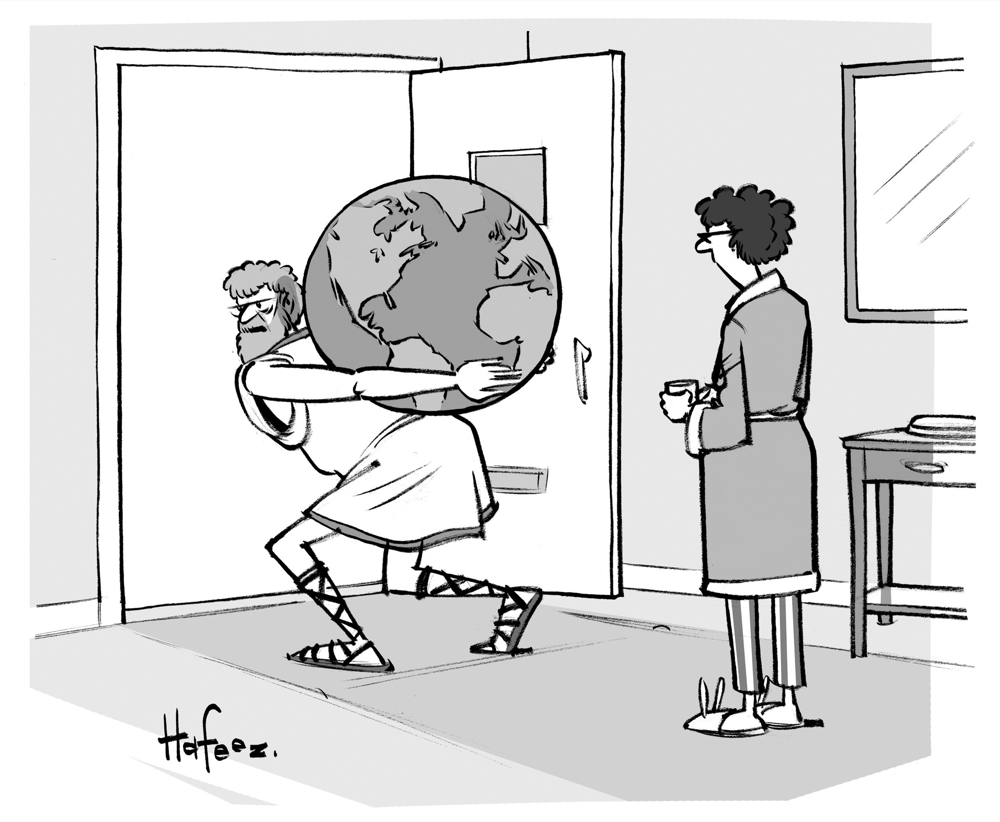 |
“This was easier to carry when it was flat.” |
“Next week, I'll move Heaven for you.” |
May 11, 2020
|
| 706 Dashboard |
 |
“Well,I know what Duke Ellington would do.” |
“Of course—we wait forever, then two come at the same time.” |
May 4, 2020
|
| 705 Dashboard |
 |
“Tall salted caramel macchiato with low-fat organic almond milk, no sugar… It’s him alright.” |
“Decaf. They can’t be far away.” |
April 27, 2020
|
| 704 Dashboard |
 |
“Forget everything you've ever thought about elevator music.” |
“No, you come in on four.” |
April 20, 2020
|
| 703 Dashboard |
 |
“We have them between all tables, it encourages social distancing.” |
“Past the alligator, through the ring of fire, first door on your left.” |
April 13, 2020
|
| 702 Dashboard |
 |
“You asked if I wanted product in my hair...and I said a smidgeon...a smidgeon, Ralph.” |
“Could you trim the sides but leave it feathered on top?” |
April 6, 2020
|
| 701 Dashboard |
 |
“I just want to make sure 'mousse' isn't a typo.” |
“I know I don’t look familiar, but, believe me, I eat here all the time.” |
March 30, 2020
|
| 700 Dashboard |
 |
“Looks like you're already familiar with the side effects.” |
“Looks like you’re already familiar with the side effects.” |
March 23, 2020
|
| 699 Dashboard |
 |
“Two of you have underlying issues.” |
“And how do you feel about how she feels about how he feels?” |
March 16, 2020
|
| 698 Dashboard |
 |
“Harry, the whole point of leaving England was to blend in.” |
“Harry, the whole point of leaving England was to blend in.” |
March 9, 2020
|
| 697 Dashboard |
 |
“This is a lot more effective on the elevated tracks.” |
“No one crosses the Pirates of Penn Station.” |
March 2, 2020
|
| 696 Dashboard |
 |
“Best farm-to-table in town.” |
“If there’s a ring in here, Hank, I swear to God . . .” |
February 17 & 24,2020
|
| 695 Dashboard |
|
“You’re in luck. A slot for you just opened up in our kitchen.” |
“You’re in luck. A slot for you just opened up in our kitchen.” |
February 10, 2020
|
| 694 Dashboard |
 |
“I didn't say I would help. I said I'd accompany you.” |
“I didn’t say I would help. I said I’d accompany you.” |
February 3, 2020
|
| 693 Dashboard |
 |
“Should I check, “exceeded expectations?”” |
“Let’s just give him the damn cheese.” |
January 27, 2020
|
| 692 Dashboard |
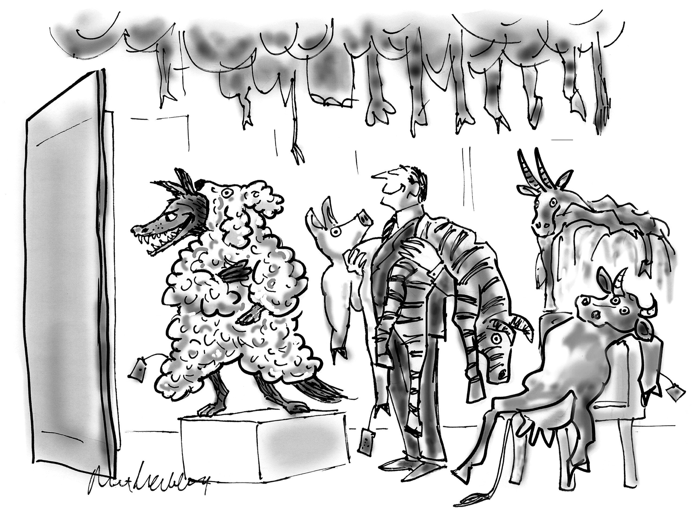 |
“First day on Wall Street, sir?” |
“I'll take this and the granny dress.” |
January 20, 2020
|
| 691 Dashboard |
|
“See? Now they ALL want scarves.” |
“Great, now they all want a scarf.” |
January 13, 2020
|
| 690 Dashboard |
 |
“Going up?” |
"Please watch your small step." |
January 6, 2019
|
| 689 Dashboard |
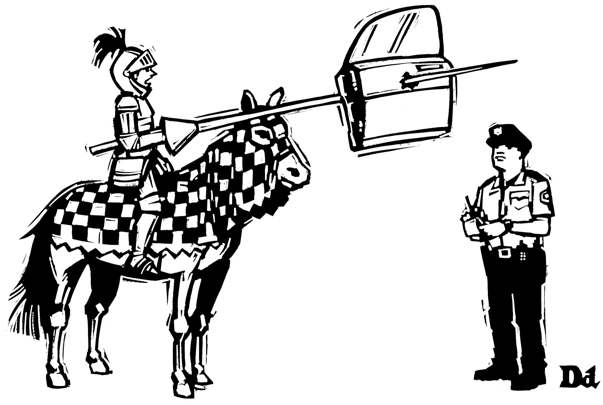 |
“He’s lucky I didn’t rear end him.” |
“Yes, but just a couple of meads, probably more than an hour ago.” |
December 23, 2019
|
| 688 Dashboard |
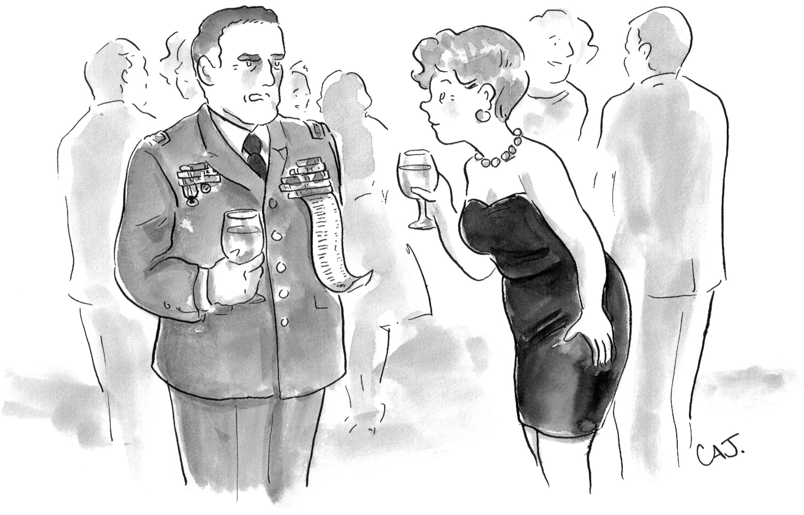 |
“It prints out his tweets. All the new uniforms have them.” |
“I was stationed at CVS during the war on drugs.” |
December 16, 2019
|
| 687 Dashboard |
 |
“You think this is awkward? Try living a few floors down.” |
“How much did you spend at Macy’s this year?” |
December 9, 2019
|
| 686 Dashboard |
 |
“Oh sure, when a MAN does it, suddenly it’s such a big deal!” |
“I don’t know how to tell him it’s not his.” |
December 02, 2019
|
| 685 Dashboard |
 |
“Stay calm. I think it just wants to be squeezed.” |
“Oh, no. I have its little one in my backpack.” |
November 25, 2019
|
| 684 Dashboard |
 |
“Publicly, we're still saying there are no side effects.” |
“Publicly, we’re still saying there are no side effects.” |
November 18, 2019
|
| 683 Dashboard |
 |
“They must have made a fortune from the wheel.” |
“I guarantee he brings up the whole discovering-fire thing within the first five minutes.” |
November 11, 2019
|
| 682 Dashboard |
 |
“I don't mind autumn so much; it's the fall I hate.” |
“It’s not you. It’s November.” |
November 4, 2019
|
| 681 Dashboard |
|
“Mobster, Larry. The invitation said to dress like a mobster.” |
“You pinch me one more time and you’re going to find yourself in hot water.” |
October 28, 2019
|
| 680 Dashboard |
 |
“Is the salmon fresh?” |
“Well, don't put it on the menu if you can't catch one.” |
10/21/2019
|
| 679 Dashboard |
|
“Supplicants, sir. You want to surround yourself with supplicants.” |
“Well, after you beheaded the groundskeeper, we had to go with something low-maintenance.” |
October 14, 2019
|
| 678 Dashboard |
 |
“My left or your left?” |
“I always knew we'd wind up together.” |
October 7, 2019
|
| 677 Dashboard |
 |
“The leftover salmon. Into my dish. You will remember nothing.” |
“The ahi. Not the canned.” |
September 30, 2019
|
| 676 Dashboard |
 |
“You know we could've had eggs for life, right?” |
“I don't tell you how to gather.” |
September 23, 2019
|
| 675 Dashboard |
 |
“Honey, be nice... he's under a lot more pressure.” |
“You two seem oddly suited.” |
September 16, 2019
|
| 674 Dashboard |
|
“Let's let him keep your ball.” |
“Let's let him keep your ball.” |
September 9, 2019
|
| 673 Dashboard |
 |
“My conditioner said it would give me extra body, but I didn't expect it to be yours.” |
“For God's sake, Dave, you're thirty-five—just use the stairs.” |
September 2, 2019
|
| 672 Dashboard |
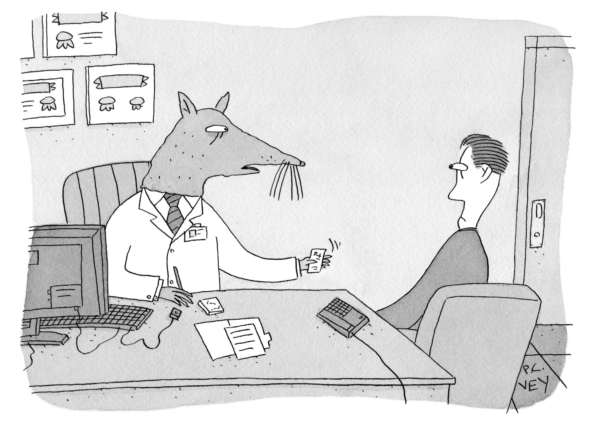 |
“I take this myself. There is one side effect I should mention.” |
“Don't worry. I wouldn't prescribe anything I haven't tested on myself.” |
August 26, 2019
|
| 671 Dashboard |
 |
“Someone came to school with humans. Now we’ve all got them.” |
“It didn’t really bother me until they discovered fire.” |
August 19, 2019
|
| 670 Dashboard |
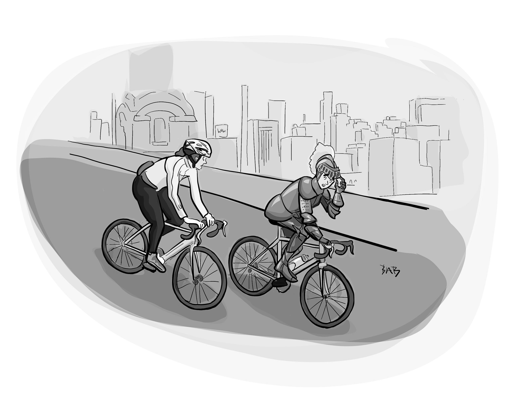 |
“Armstrong? No, though I do get mistaken for Lance a lot.” |
“It started as a crusade. Now it's just a commute.” |
August 5 & 12, 2019
|
| 669 Dashboard |
|
“He went right from crawling to stand-up!” |
“I love his bedtime routine.” |
July 29, 2019
|
| 668 Dashboard |
|
“I’m sorry. I’ve been burned too many times.” |
“I’m sorry. I’ve been burned too many times.” |
July 22, 2019
|
| 667 Dashboard |
 |
“Maybe we should try thinking inside the box.” |
“Let's just go with the open floor plan.” |
July 8, 2019
|
| 666 Dashboard |
|
“You should see the couch they have at the urologist's office.” |
“Shouldn’t you be sitting in an ear?” |
July 1, 2019
|
| 665 Dashboard |
 |
“Lunch is on me.” |
“How about some help carrying the groceries?” |
June 24, 2019
|
| 664 Dashboard |
 |
“I just made a guy disappear for twenty years. Can you do that?” |
"When was the last time you saw either half of her?” |
June 10, 2019
|
| 663 Dashboard |
 |
“Next time, when they ask you if you want any toppings, you’d better be more specific than 'Yeah, a couple.'” |
“Well, you're not what we ordered, either.” |
June 3, 2019
|
| 662 Dashboard |
 |
“Did you see the rock he gave her.” |
“It’s about time they settled down and razed a village.” |
May 27, 2019
|
| 661 Dashboard |
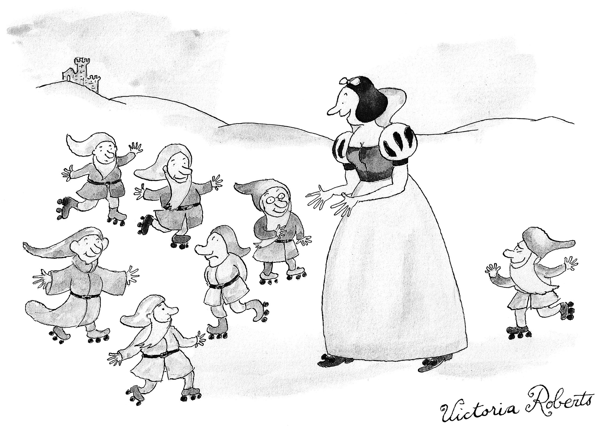 |
“I am pleased to announce that Dopey will be leaving us to pursue a career as White House Chief of Staff.” |
“Workplace morale hasn't been this high since we introduced whistling.” |
May 20, 2019
|
| 660 Dashboard |
 |
“I’m afraid we’ve found a problem with the Crown Jewels.” |
“Worse than a cold. It's a common cold.” |
May 13, 2019
|